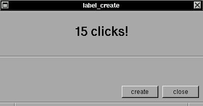

The label is just a floating decored (or not :) text inside any window. This text can be updated automatically by XSTEP with the verification of checksums. See the periodic table of labels for details about options in label formating.SYNTAX
struct xtree *label_create(x,y,w,h,label,color,type);EXAMPLEint x,y,w,h,color,type;
char *label;Create a text in position (x,y) and size (w,h), with a colored box defined by 'color' and aligned by 'type'. For now 'type' can be 'left', 'right' or 'center'. A special type 'center' is defined by 'up'. The text stored in 'label' is checked in any 'broadcast' event and can be automatically updated.
In this example, if you click in the button, the variable text[] will be changed, then the label will check the variable and determine the checksum (if the variable change, the checksum change and then the label is redrawed with a new value of text[] :)#include <xstep.h> char text[256]; void createf(struct xtree *treeptr) { sprintf(text,"%d clicks!",atoi(text)+1); broadcast++; } void xmain(int n,char *p[]) { window_create(0,0,400,180,"label_create"); defaultfont=helvetica24b; label_create(0,0,0,-90,text,gray,up); defaultfont=helvetica12m; label_create(0,-90,0,0,"",gray,up); button_create(-88,-8,72,24,"create", createf); button_create( -8,-8,72,24,"close", window_close); }